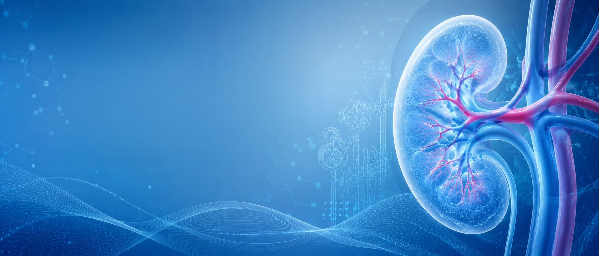

Relevamiento epidemiológico nacional y obligatorio de todos los pacientes en tratamiento dialítico crónico en Uruguay desde 1981.
El Registro Uruguayo de Diálisis (RUD), en actividad desde 1981, es el registro obligatorio que releva a todos los pacientes en tratamiento dialítico crónico en Uruguay.
Es gestionado por un Comité integrado por socios de la Sociedad Uruguaya de Nefrología (SUN) y docentes de la Cátedra de Nefrología, quienes desempeñan su labor en forma voluntaria, junto a un Asistente de base de datos y un Becario (ambos cargos rentados).
Desde 1989 la recolección de datos se realiza en conjunto con el Fondo Nacional de Recursos (FNR), y desde 2004 a través del sistema electrónico SISTEMA MARIA, lo que garantiza información actualizada y de calidad sobre la hemodiálisis y la diálisis peritoneal en el país.
Cada informe anual incluye a todos los pacientes en tratamiento con cualquier modalidad de diálisis que se encontraban vivos al 31 de diciembre de ese año, así como a quienes egresaron del tratamiento durante el mismo período. En los últimos informes se ha incluido información sobre los programas de Trasplante Renal en el país.
Pueden integrar el Comité del RUD quienes sean socios de la SUN o docentes de la Cátedra de Nefrología o de otras disciplinas que estén de acuerdo en cumplir con los fines del RUD (Informáticos, Estadísticos, Epidemiologos, etc.) y desempeñan su actividad en forma voluntaria.
Los integrantes están a cargo de la organización general del registro, el tratamiento y procesamiento técnico de la base de datos y velar por el cumplimiento de la misión, visión y objetivos establecidos.
- Cargos actuales:
- Asistente de Registro Uruguayo de Diálisis: Dra Leonella Luzardo (2021 a la fecha)
- Becario de Registros Nefrológicos: Dr Federico Maeso (2026-2027)
La recolección de datos ha transitado por tres fases fundamentales:
- Etapa inicial (1981 - 1989): Registro de carácter voluntario, donde el propio Comité de Registro se encargaba directamente de la recolección de los datos.
- Etapa obligatoria (1989 en adelante): La recolección de datos pasa a realizarse a través del Fondo Nacional de Recursos (FNR) cobrando carácter obligatorio por normativa.
- Etapa digital (Junio 2004 en adelante): El FNR incorporó el SISTEMA MARIA, un medio electrónico donde se ingresan diariamente, mensualmente o anualmente los datos de hemodiálisis (HD) y diálisis peritoneal (DP), entregándose un resumen anual convenido al RUD en el mes de mayo del año siguiente.
La información se consolida en una base de datos proveniente de los archivos de solicitud de ingreso al plan de diálisis, datos de evolución mensual, añadiendo una vez al año la información relacionada con la comorbilidad, y datos de sesiones enviados diariamente por los Centros de Hemodiálisis (HD) y mensualmente por los Centros de Diálisis Peritoneal (DP).
Se realizan controles de calidad que incluyen una depuración rigurosa de la información antes de iniciar el análisis, con el objetivo de identificar y excluir los casos que presentan datos incorrectos, inconsistentes o incompletos.
Consulta los informes epidemiológicos anuales correspondientes al Registro Uruguayo de Diálisis: